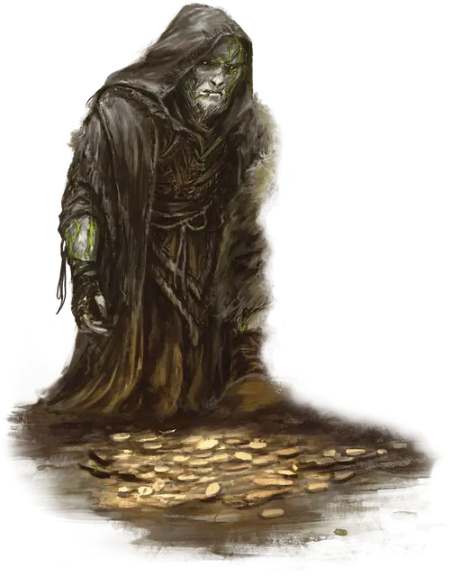

Псионический пепельник
Psionic Ashenwight
Средняя Нежить, нейтральная

Класс Доспеха 16 (природный доспех)
Хиты 78 (12к8 + 24)
Скорость 25 футов
| мод | спас | ||
|---|---|---|---|
| СИЛ | 19 | +4 | +4 |
| ЛОВ | 13 | +1 | +1 |
| ТЕЛ | 15 | +2 | +2 |
| мод | спас | ||
|---|---|---|---|
| ИНТ | 17 | +3 | +3 |
| МДР | 14 | +2 | +2 |
| ХАР | 6 | −2 | −2 |
Сопротивление урону некротическая энергия, психическая энергия, яд
Иммунитет к состояниям бессознательность, испуг, истощение, отравление, очарование, паралич
Чувства тёмное зрение 120 футов, пассивное Восприятие 12
Языки понимает языки, известные при жизни, но не может говорить, Телепатия 120 фт.
Опасность 7 (2900 опыта)
Бонус мастерства +3
Действия
Мультиатака. Пепельник совершает две атаки Некротическим осколком. Он также использует Псионическую корону, если она доступна.
Некротический осколок. Рукопашная или дальнобойная атака оружием: +7 к попаданию, досягаемость 5 футов или дистанция 60 футов, одна цель. Попадание: 7 (1к6 + 4) урона некротической энергией. Если цель — существо, она совершает с помехой следующий бросок атаки до конца своего следующего хода.
Псионическая корона (перезарядка 5–6). Пепельник покрывает голову существа, которого он видит в пределах 60 футов от себя, короной из зазубренных призрачных кристаллов. Цель должна преуспеть в спасброске Мудрости Сл 14, иначе она станет очарованной на 1 минуту. Во время такого очарования мысли цели медлительны; он не может совершать реакции, его скорость снижается вдвое, и она получает 9 (2к8) психического урона в начале каждого своего хода. Цель может повторять спасбросок в конце каждого своего хода, прекращая эффект на себе в случае успеха.
Использование заклинаний (псионика). Базовой характеристикой пепельника является Интеллект. Он может накладывать следующие заклинания, не нуждаясь ни в каких компонентах (Сл спасброска от заклинаний 14:
• Неограничено: волшебная рука [mage hand] (рука невидима)
• 1/день каждое: умиротворение [calm emotions]
Описание
Когда Гуманоид, охваченный жестокостью и яростью, умирает в области, испорченной Дальним пределом, существо иногда возрождается в виде пепельника. Кожа этой ужасающей Нежити сухая, а их глаза часто светятся потусторонней силой.
Когда пепельник появляется рядом с кристальной жилой, наполненной аберрантной силой, или когда кто-то задерживается в области падшей магии, у пепельного духа есть шанс развить псионические способности. Псионический пепельник заметно более разумен, чем другие пепельники, хотя полученное в результате сознание представляет собой новое творение, отдельное от того, кем пепельник был при жизни.
Некоторые псионические пепельные существа посвящают своё существование тому, чтобы собрать воедино свою предыдущую жизнь, в то время как другие стремятся просветить других пепельных духов этой новой псионической силой.